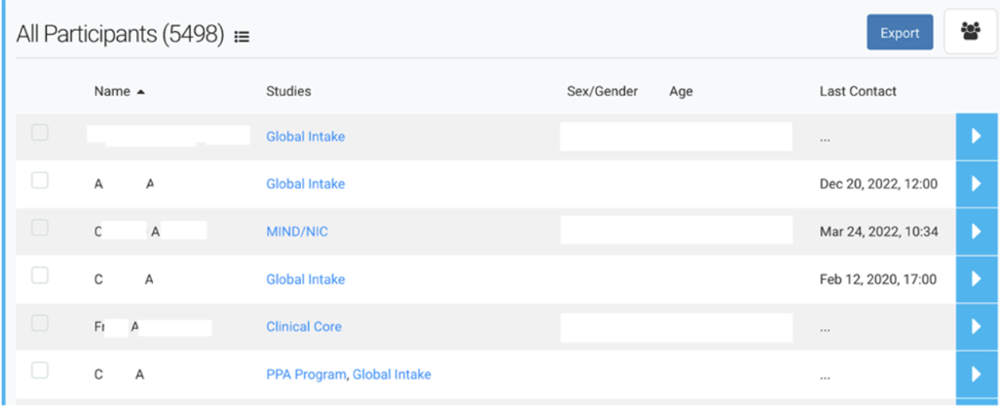
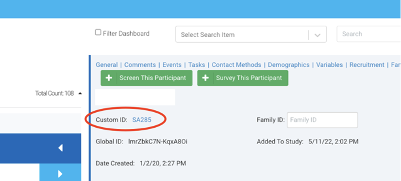
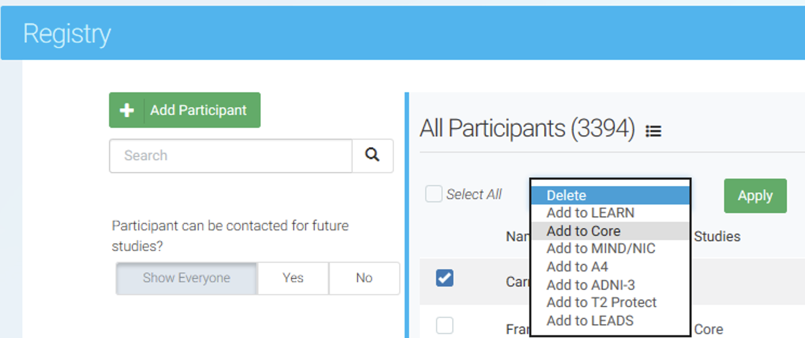

Chapter 5 Ripple General SOP
- Ripple Science
- Ripple Science is a web-based software for CROs, Principal Investigators, and Project Coordinators that aids in participant recruitment and management.
- Ripple Science may be accessed by navigating to https://mesulamcenter.ripplescience.com. For access to Ripple, contact the data manager or the project manager.
- When logging into ripple, you see a navigation menu running across the top.
5.0.1 Registry

- The registry contains all participants that have ever expressed interest in the Mesulam Center, both participants enrolled in research, caregivers enrolled in support groups, potential participants that were screened and ineligible, etc.
- The registry is sorted by last name. The name of the participant/potential participant is in the first column, the list of studies that they have been added to is in the second, followed by sex and age and if they have ever been contact/when was the last time they were contacted. 
- Search for a participant:
- To search for a specific participant, search either the last name, first name or global ID, the 15-17 alphanumeric unique ripple identifier for each person in the Ripple database.

- To search for a group of potential participants that all meet the same criteria, you can filter the registry.
- The below example search is for the number of people that were added to the Ripple registry after 1/1/23 until the date the report was filtered (1/25/23) and are above 80 years old and have not already been added to the superaging study. This resulted in 14 participants. For these participants, you can see if they have been contacted, what age they are, and what other studies they came in from.
- For more information click the arrow in blue to the right of each participant, to go to their contact card with all of the information about studies they have been added to, how much they have been contact, contact information, and screening information needed to determine eligibility. See more about the participant contact card below.
- If the person has been added to the global intake study, they were recruited from our online survey, if they are added to the URG Outreach study, they were recruited at a community event, and if they are not added to either, they were manually entered into the database.

- Adding participants to a study:
- To add a participant to a study, click the check box next to their name, then a dropdown will appear at the top. Select the study and click apply. Multiple participants can be added to a study at one by clicking the check box next to each participant.
- To search for a specific participant, search either the last name, first name or global ID, the 15-17 alphanumeric unique ripple identifier for each person in the Ripple database.

5.1 Studies
- Each study recruiting participants at the Mesulam Center has a separate Ripple page. To navigate to a study, go to “select study” in the upper left hand of the page.
- A list of the studies that you have access to will appear.

- To be added to a ripple study, contact the manager of that project and the data manager.
- Study Coordinators and Research Assistants will only have access to those studies that they are IRB approved to work on.
- Only participants that have been added to each study will be visible on each study page.
- When you go to a study, you will see different tabs across the top, dashboard, tasks, recruitment, calendar, potential participants, and enrolled participants.
5.2 Dashboard

- The first of several tabs, and the landing page upon login, is the Dashboard. The Dashboard provides an overview of the study’s recruitment progress as well as analytic insights for recruitment. Some studies at the Musallam center do not utilize this tab.
5.3 Tasks
- The second tab is the Tasks page where scheduling and recruitment tasks can be assigned to different team members. Only the Clinical Core and PPA studies use the Tasks Tab.
- Tasks can be anything that has been assigned to a study team member, from scheduling a participant to completing a visit, to a social work call.
- The tasks tab will have all of the tasks currently assigned for the whole team.
- To see your individual tasks, go out of the study, to your ripple home page:

- Here you can view all of the tasks assigned to you. You can also access the report builder which will be covered later.
5.4 Recruitment
- The third tab is the Recruitment page. This page is where sources and strategies may be updated for recruitment tracking purposes. This page is specific to one study and recruitment sources need to be tracked center wide, so study specific recruitment sources are not used for any Mesulam Center studies.
5.5 Calendar
- The third tab is the Calendar page. The calendar page shows all upcoming visits.
- Google calendar to Ripple Integration:
- Currently the PPA, Clinical Core, and SuperAging are automatically linking visits from the google calendar.
- Adding a visit to the google calendar to automatically add to Ripple:
- Title in Google Calendar: #Ripple Custom ID [Event Abbreviated Name]

- When the Google Calendar title is in this format, the visit is logged as scheduled in Ripple.
 - To find the custom ID, go to the participant contact card in the potential participants or enrolled participants tab. If the participant does not have a custom ID, one must be created before scheduling on the google calendar. If the custom ID is blank, the visit will not connect from the google calendar.
- Once the there is a result for the Event, add the result to the end of the title (Complete, Rescheduled, Canceled, No Show).
- Title in Google Calendar: #Ripple Custom ID [Event Abbreviated Name]
- Google calendar to Ripple Integration:
5.6 Potential Participants
- The Potential Participants tab is where any participant added to the ripple study but not enrolled will be organized and managed.
- For the 3 registry projects (Global intake, URG Outreach, and Miller Registry), all participants will be held “potential participants”, because these three projects do not enroll, but facilitate enrollment for other studies.
- Participants will be organized into one of several statuses that are defined for each study.
- Common statuses are: Not Yet Contacted, Screening In-progress, Eligible, Ineligible, Scheduled
5.7 Enrolled Participants
- Once the participant is scheduled and comes in for the visit, they are moved to the enrolled tab.
- The Enrolled Participants tab is where enrolled participants will be organized and managed.
- Participants will be organized into one of several statuses that are defined for each study.
- Common Status for Enrolled are: Active, Inactive/No Longer Pursuing, Deceased.
5.8 Study Settings
- The sixth and final tab is the Study Settings page. This is where things such as display, statuses, or other features may be edited. Study Coordinators and Research assistants should not make any changes or edits to the Study Settings. Requests for changes should be shared with the study manager.
5.9 Adding Participants
- Before adding a new participant, search the registry first to determine if an individual has already been added to Ripple. The registry can be accessed within the header.

- Once an individual is identified within the registry, they can be added to a study by selecting the checkmark next to their name and utilizing the dropdown menu at the top of the page. 
- If an individual cannot be found within the registry, they will need to be directly added to a study.
- This can be done by navigating OUT of the registry and into a specific study (through the study dropdown in the upper left corner of Ripple). Go to the Potential Participants tab select “Survey Participant”. Do not select “Add Participant” because adding a participant through a survey allows for entry of more participant information.

- A dropdown will appear with the list of surveys available. Choose the “Add/View Participant” Survey, then click “open”
- A pop-up window will then appear. Enter the first name, last name, preferred name (if applicable), and the status that they will enter the study as.
- First and Last Name of the participant are the only fields that are required. If you do not know the name of the participant, but you know the first and last name of someone connected to them, add that person’s first and last name with an asterisk behind both the first and last name. Once you get more information, you can change the names in the contact card.

- Then you will be asked what other information you have for this participant. Select all that apply.

- For each selected, questions will appear to collect the information for the participant. Be sure to enter as much information for the participant as possible.
- The last question is whether we can add them to our mailing list.
- For the URG Outreach study, there are two more questions (see below) to indicate which studies this participant seems best suited for and what status the participant belongs in.

- For the URG Status, all new participants should be “Contact Not Initiated”.
- Once this survey is complete, the information saved in the survey can be viewed in the participant contact card see below for more information.
- This can be done by navigating OUT of the registry and into a specific study (through the study dropdown in the upper left corner of Ripple). Go to the Potential Participants tab select “Survey Participant”. Do not select “Add Participant” because adding a participant through a survey allows for entry of more participant information.